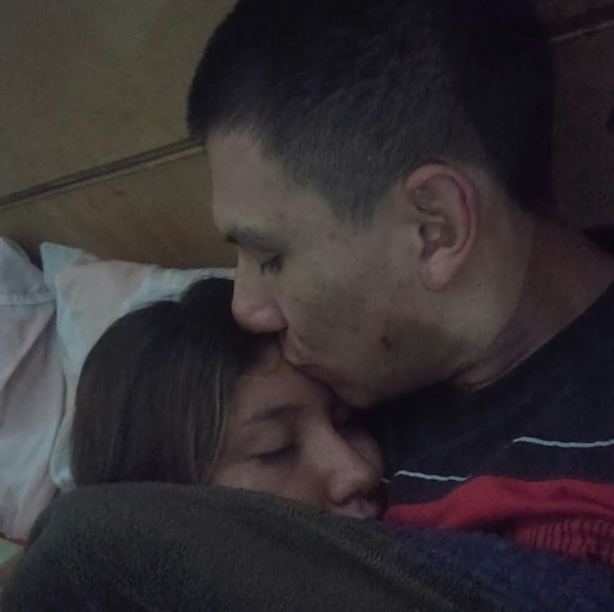
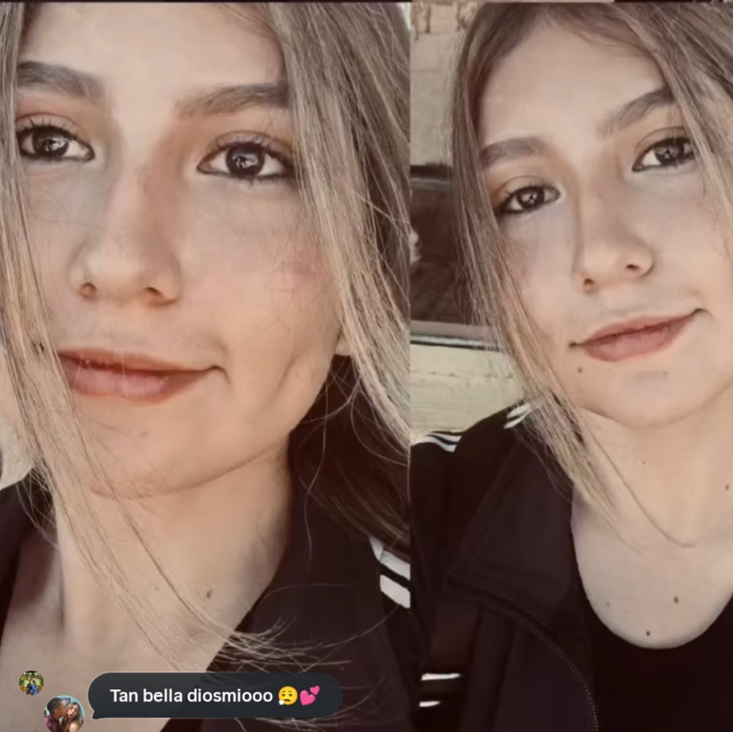
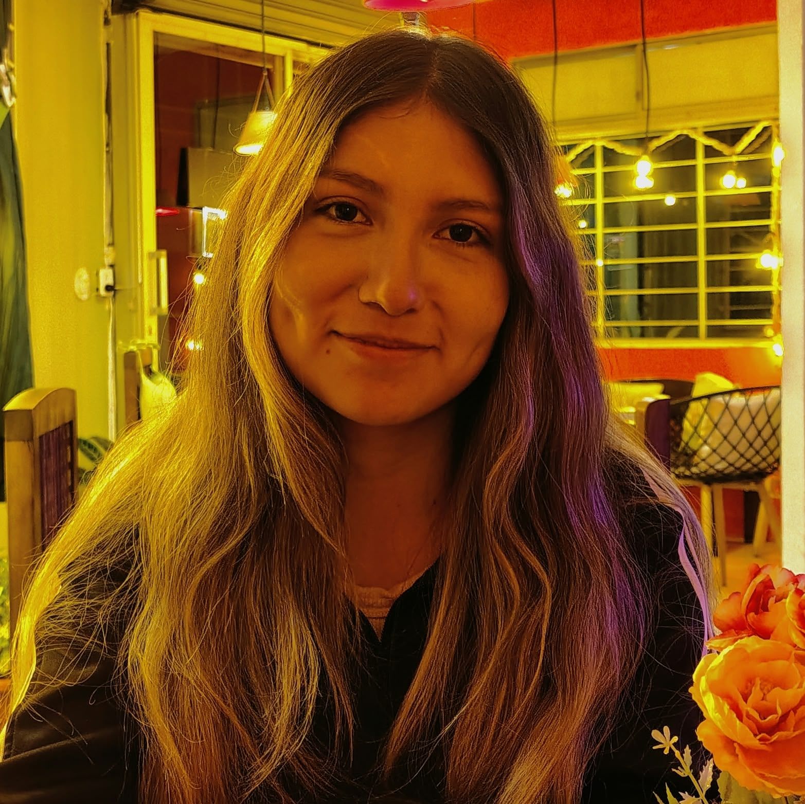
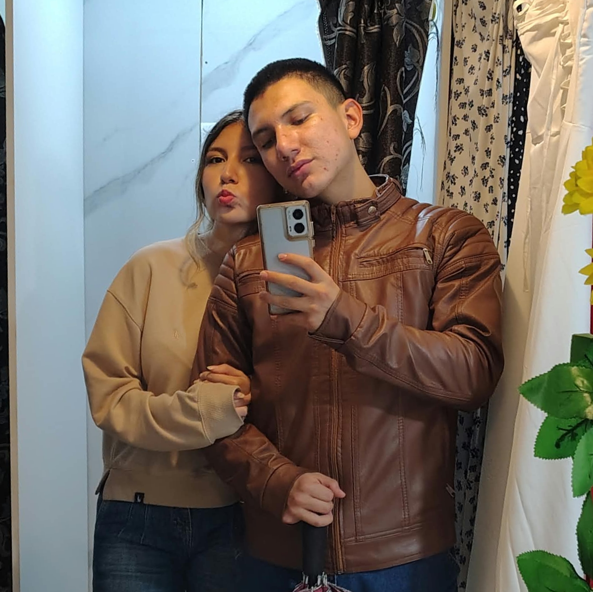
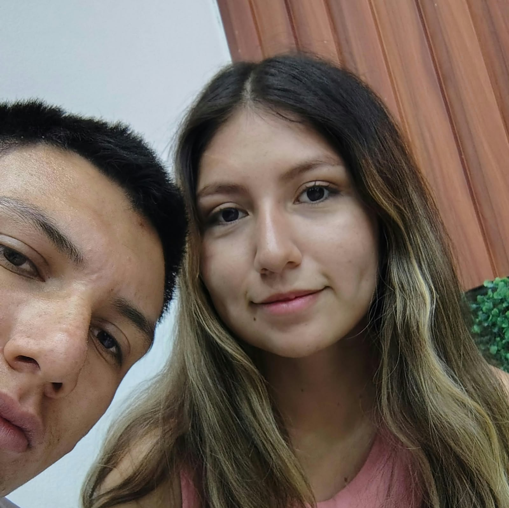
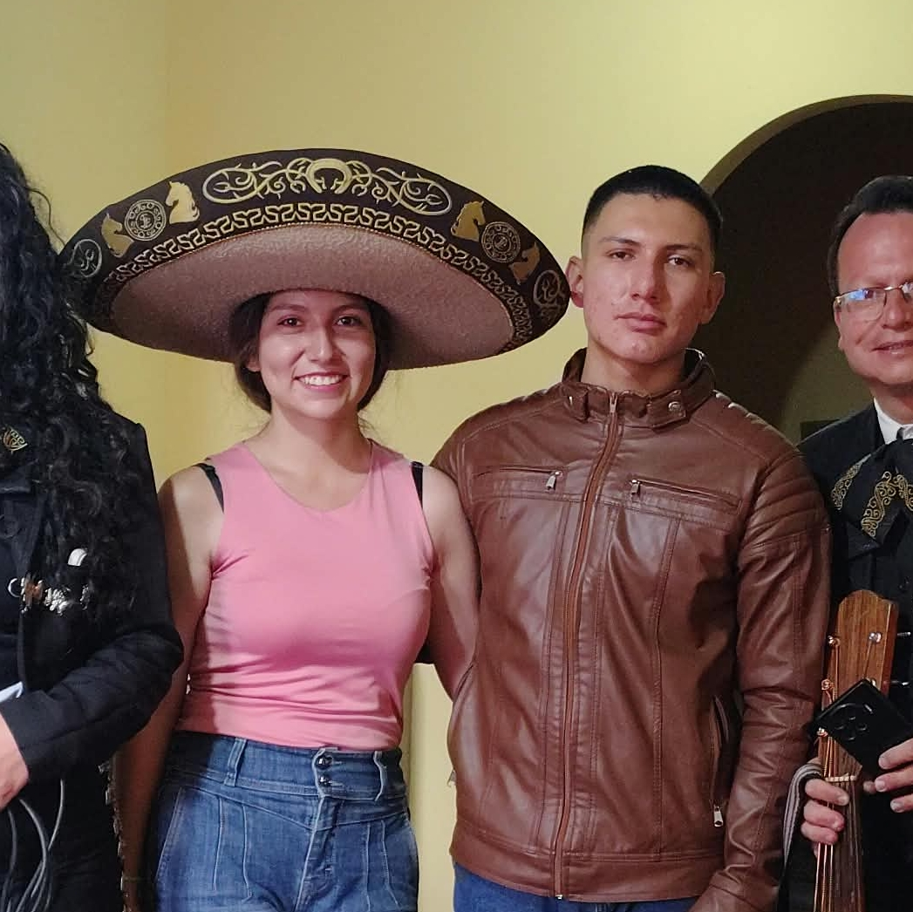
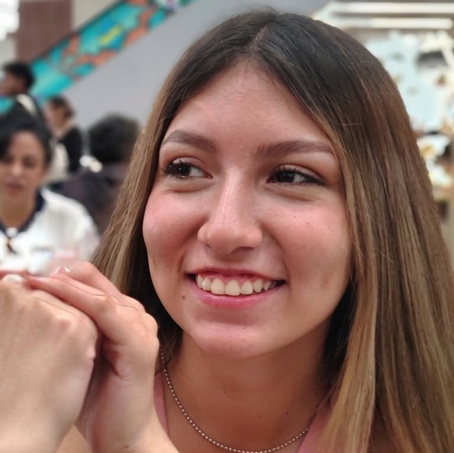
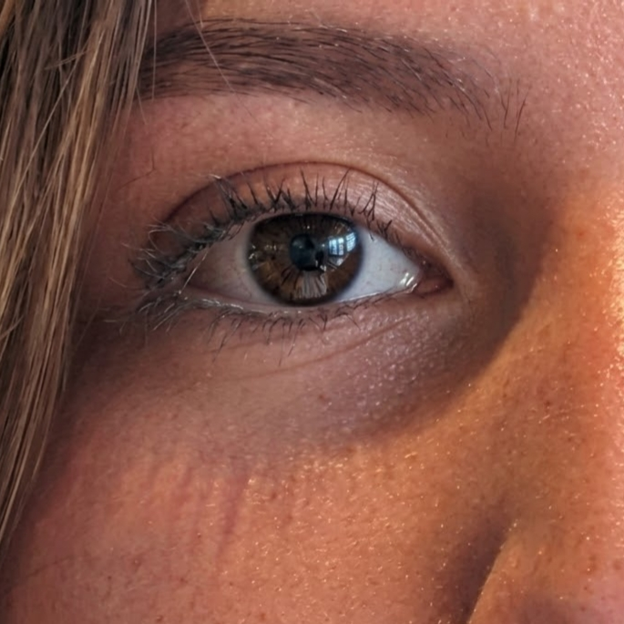

El amor de mi vida
Este pequeño proyecto no habla solamente de una mujer hermosa. Habla de la mujer que cambió mi manera de ver el mundo.
Porque es inevitable no poder pensar en ti, en tu ser, cuerpo y corazón. Cuando te vi, supe qué eras y eres una persona con belleza pura; una mujer perfecta para mí, vi al mundo sucio, antipático porque no hay nadie como tú, desde que te vi, todo se me hizo feo, y no solo en personas, sino que tu ves el mundo y la vida distinto, siempre viendo lo justo, lo mejor, y lo más dulce, práctico, dejé de medirme en salir a comer, en pasear, en muchas cosas, porque me hiciste conocer y aprender que la vida hay que disfutarla, hay que vivirla y ser feliz, esrar tranquilos, cuando yo vivía en un mundo donde para sentirme bien, tenia que ver felices a otros, pero no es así.
Gracias por hacerme disfrutar la vida y el momento, por eso siempre quiero verte feliz, contenta y orgullosa de la persona que tienes a lado, porque no quiero verte mal, triste, porque no te lo mereces quiero y anhelo hacerte vivir que cada momento sea especial para ti, tan especial como lo eres tú en mi vida, y en el mundo exterior.
Tu cabello es como ver un océano dorado
Ondulado, liso, extenso y denso como el mar
Porque ver lo natural, simétrico y parejo me da tranquilidad
No había cabello ni peinado, que me haya enamorado
Tu sonrisa tiene el extraño poder de mejorar incluso los días más complicados Es esa sonrisa la que ilumina mis malos momentos, recuerdos y mi vida La que me recuerda por qué sigo luchando y no decaigo La que convierte cualquier lugar en mi lugar favorito







